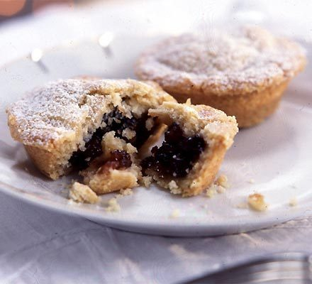

Unbelievably Easy Mince Pies

Our easiest mince pie recipe!
A quick and easy recipe that's great fun to make with the kids,
and even better... no rolling pin required!
Ingredients
- 225g Butter (Cold, Diced)
- 350g Plain Flour
- 100g Golden Caster Sugar
- 280g Mincemeat
- 1 Small Egg (Beaten)
- Icing Sugar (to Dust)
- Pinch of salt
Steps
- Pre-heat the oven to 200c/180c Fan/Gas 6.
- Rub the butter into the flour, mix in the golden caster sugar and a pinch of salt.
- Using your hands, turn the pastry into a ball. Knead it slightly. The dough should be fairly firm. You can use this immediately, or chill it for later use.
- Press walnut-sized balls of pastry into a baking tin. The mixture should fill 18 holes. Leave some left over to use as lids.
- Spoon the mincemeat into the lined tins. Using the remaining pastry to cover the pies.
- Press the edges of the pies gently to seal them together.
- Brush the tops of the pies with the beaten egg. Place the mince pies into the oven. Bake for 20 minutes. Leave to cool in the tin for 5 minutes before removing onto a wire rack.